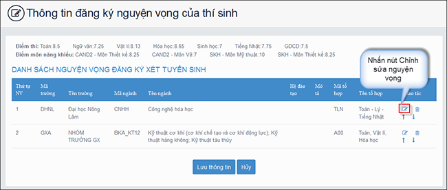

Hướng dẫn thí sinh thực hành điều chỉnh nguyện vọng ĐKXT ĐH-CĐ năm 2017

Lần cập nhật cuối lúc Thứ bảy, 08 Tháng 7 2017 09:45 Viết bởi Administrator Thứ tư, 05 Tháng 7 2017 08:24
Hướng dẫn thí sinh có nhu cầu thực hiện điều chỉnh nguyện vọng ĐKXT sau khi có kết quả thi THPT quốc gia. Mỗi thí sinh chỉ được điều chỉnh ĐKXT 01 lần trong thời gian quy định và chỉ được sử dụng một trong hai phương thức: Trực tuyến hoặc bằng Phiếu điều chỉnh nguyện vọng ĐKXT. Chỉ được nhập vào hệ thống 1 lần do vậy thí sinh cần kiểm tra kỹ thông tin trước khi lưu thay đổi.

Hướng dẫn thí sinh thực hành điều chỉnh nguyện vọng ĐKXT
Từ ngày 09/7 đến ngày 11/7/2017 Cổng thông tin tuyển sinh sẽ mở để thí sinh thực hành điều chỉnh nguyện vọng ĐKXT trực tuyến. Đề nghị các sở giáo dục và đào tạo thông báo cho thí sinh biết để tham gia đồng thời lưu ý đây chỉ là giai đoạn chạy thử phần mềm giúp thí sinh làm quen với cách điều chỉnh nguyện vọng ĐKXT trực tuyến. Kết quả thực hành điều chỉnh nguyện vọng ĐKXT của thí sinh trên Cổng thông tin tuyển sinh sẽ bị xóa toàn bộ sau khi kết thúc đợt chạy thử. Hệ thống sẽ được làm mới lại (Reset) để thí sinh chính thức điều chỉnh nguyện vọng ĐKXT từ ngày 15/7/2017.
Dùng cho thử nghiệm (từ ngày 9-11/7):
- Truy cập vào website http://203.190.173.60:8080
- Thí sinh sẽ đăng nhập bằng: Số CMND và mật khẩu là: 123456a@
Lưu ý: Yêu cầu thí sinh đọc kỹ hướng dẫn (*) file đính kèm dưới.
* Hướng dẫn thí sinh thay đổi nguyện vọng trực tuyến tài liệu mới xem tại đây.
- Điều chỉnh bằng phương thức trực tuyến (online): thí sinh sử dụng tài khoản và mật khẩu cá nhân đã được cấp để thực hiện việc điều chỉnh nguyện vọng ĐKXT. Lưu ý thí sinh: phương thức này chỉ chấp nhận khi số lượng nguyện vọng sau khi điều chỉnh không lớn hơn số lượng nguyện vọng đã đăng ký ban đầu trong Phiếu ĐKDT. Thời gian điều chỉnh bằng phương thức trực tuyến từ ngày 15/7/2017 đến 17h00 ngày 21/7/2017.
- Điều chỉnh bằng Phiếu điều chỉnh nguyện vọng ĐKXT: thí sinh được điều chỉnh tăng thêm số lượng nguyện vọng so với số lượng nguyện vọng đã đăng ký ban đầu trong Phiếu ĐKDT và phải nộp bổ sung lệ phí cho số nguyện vọng tăng thêm theo quy định. Thí sinh phải điền đầy đủ thông tin vào Phiếu điều chỉnh nguyện vọng ĐKXT và gửi trực tiếp về điểm thu nhận hồ sơ để cán bộ máy tính cập nhật vào cơ sở dữ liệu của Cổng thông tin tuyển sinh của Bộ GDĐT. Lưu ý thí sinh ghi đúng mã trường, mã ngành/nhóm ngành, mã tổ hợp xét tuyển theo quy định của trường. Nguyện vọng nào ghi không đúng sẽ không được hệ thống phần mềm chấp nhận và bị loại. Điểm thu nhận hồ sơ phải yêu cầu thí sinh kiểm tra kết quả điều chỉnh nguyện vọng ĐKXT trong thời gian quy định và đề nghị điều chỉnh sai sót, nếu có. Thời gian điều chỉnh theo phương thức này từ ngày 15/7/2017 đến 17h00 ngày 23/7/2017.
1. Hướng dẫn thí sinh thay đổi nguyện vọng trực tuyến (xem mục 4.5)
3. Phiếu đăng ký điều chỉnh nguyện vọng
4. Công văn 425/SGDĐT-GDCN V/v Hướng dẫn công tác tuyển sinh đại học hệ chính quy; tuyển sinh cao đẳng nhóm ngành đào tạo giáo viên hệ chính quy năm 2017 của Sở GD&ĐT Quảng Nam
5. Công văn số 603/BGDĐT- GDĐH ngày 17/02 /2017 của Bộ GDĐT
- 26/09/2017 08:30 - Đề cương tuyên truyền Đại hội Đoàn TNCS Hồ Chí Min…
- 26/09/2017 08:22 - Tài liệu chuyên đề học tập tư tưởng, đạo đức, phon…
- 23/08/2017 07:59 - Bài hát Vang danh ngôi trường chuyên Nguyễn Bỉnh K…
- 18/08/2017 07:44 - Cuộc thi Tìm hiểu pháp luật trực tuyến trên mạng I…
- 06/07/2017 15:55 - Hướng dẫn tra cứu điểm thi và phúc khảo bài thi và…
- 29/04/2017 08:00 - Ninh Bình 2017 - Hành trình chinh phục những đỉnh …
- 04/03/2017 16:05 - Kết quả cuộc thi Olympic đi du học Nga môn Vật lý …
- 16/12/2016 08:45 - Thư ngỏ gửi các em cựu học sinh trường THPT Chuyên…
- 21/11/2016 08:43 - Về việc tham gia cuộc thi Giao thông học đường năm…
- 11/11/2016 08:06 - Thiết kế xây dựng tượng cụ Nguyễn Bỉnh Khiêm